Below, you will find a step-by-step guide to drawing my favorite little guy: the Jank Deer, Vesnik. Want to learn more about Vesnik? Visit my About page!
All you'll need to get started is as follows:
Your favorite drawing utencil
Paper
Are you ready to get started? Let's go!
Draw half of a bean shape
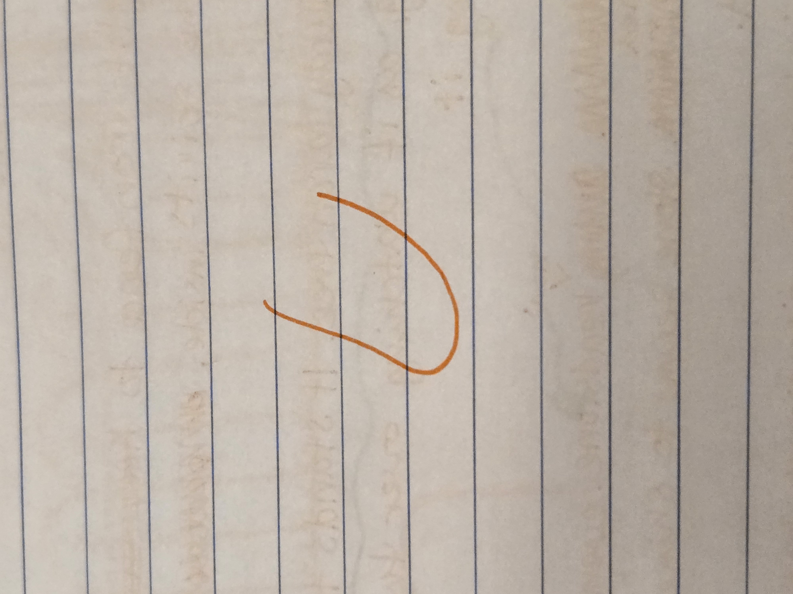
Draw two beans on top of that and connect them with a line
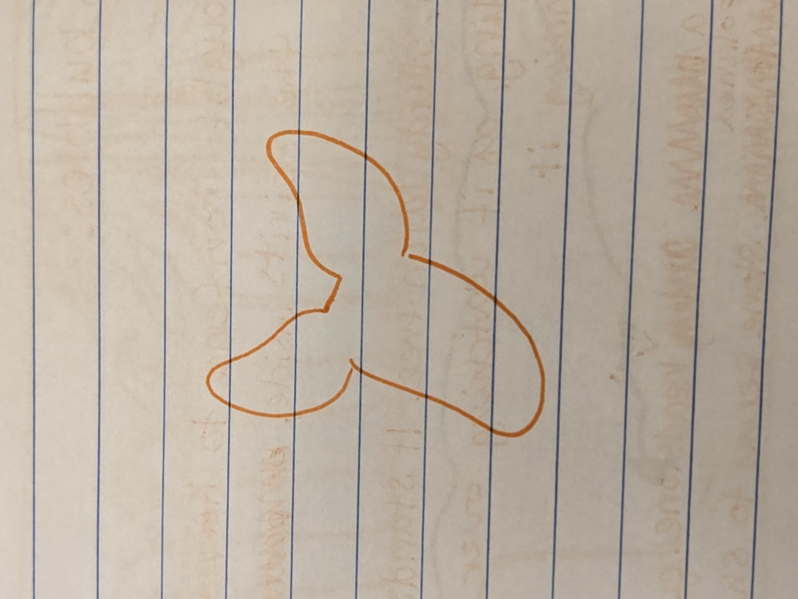
Draw two lines for the neck
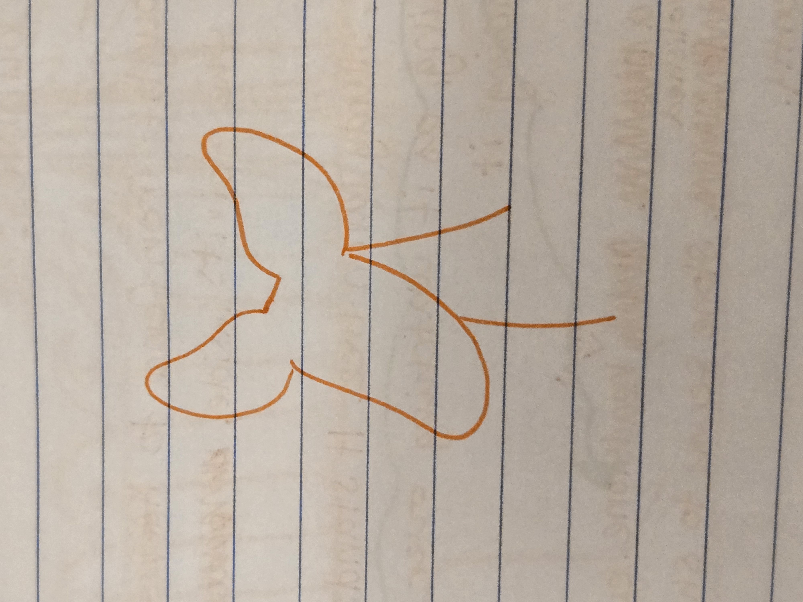
Draw a curved line for the back
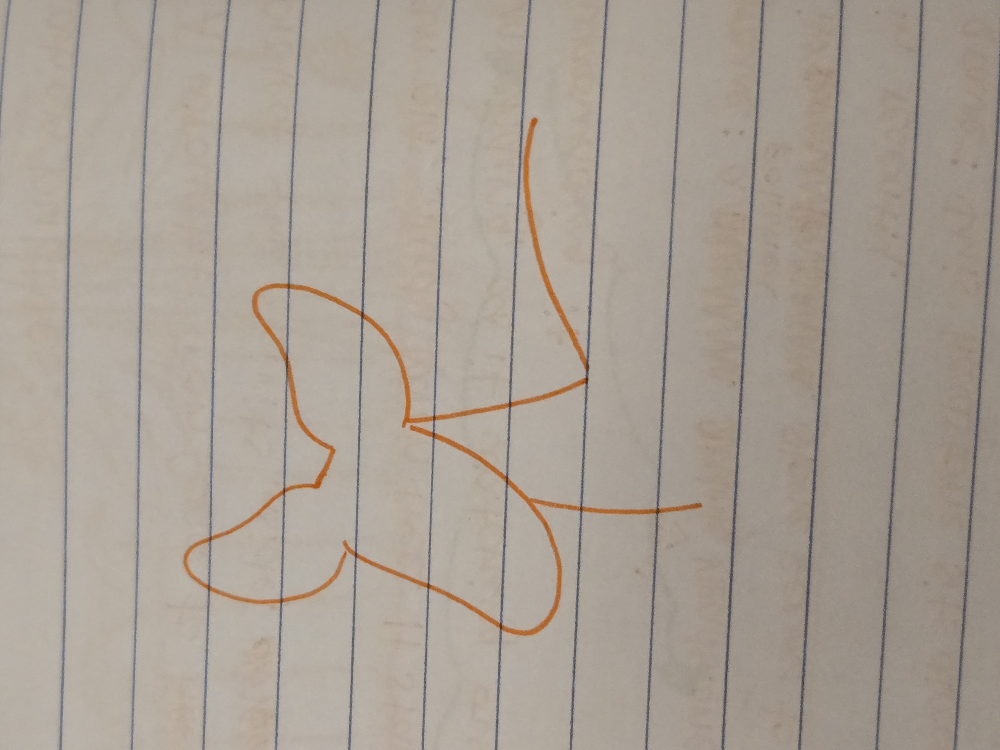
Draw a long triangle for the leg, then connect it to the front of the chest
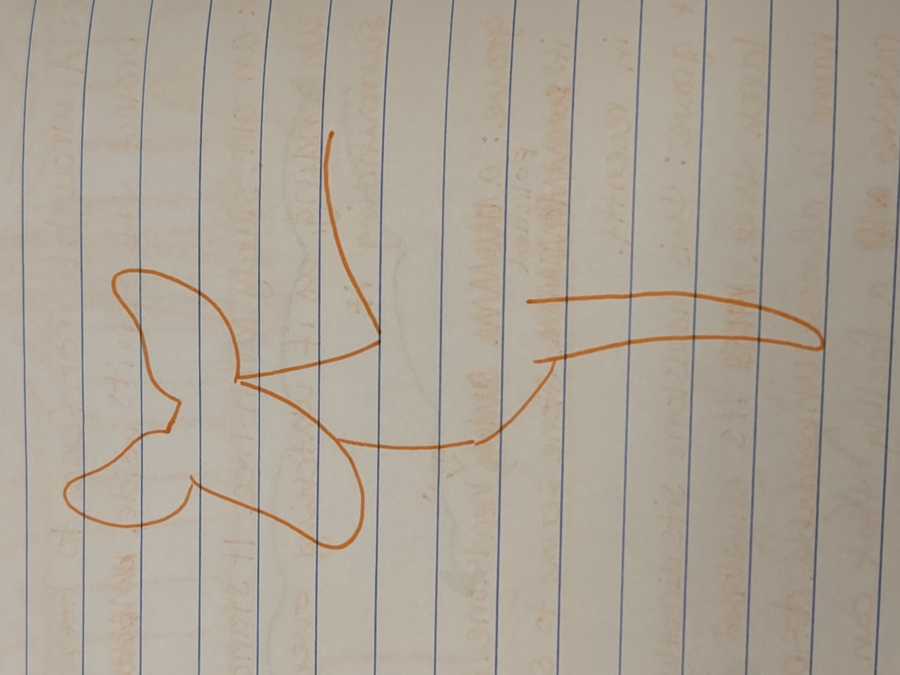
Draw a second leg behind the first
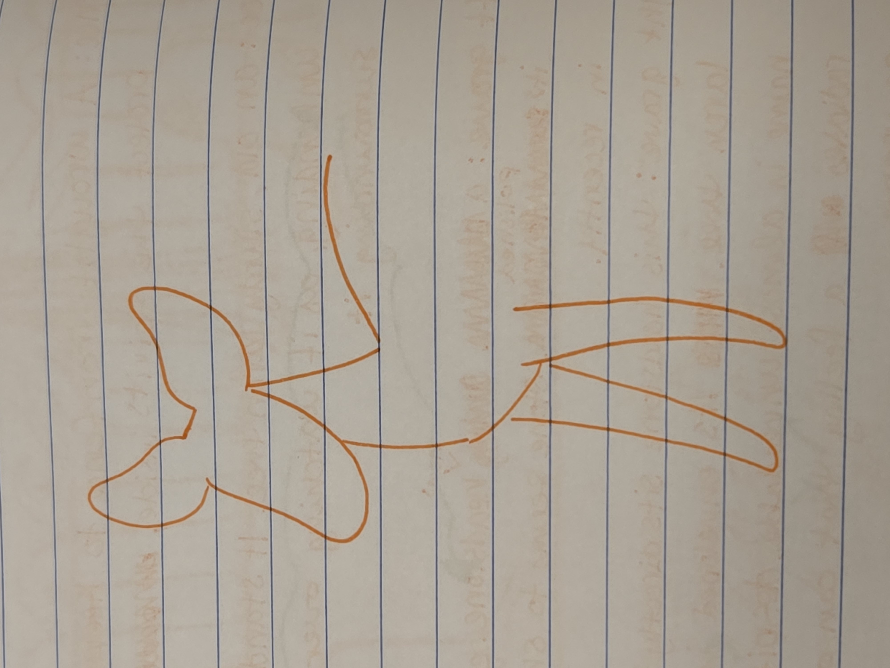
Draw a leaf shape for the tail
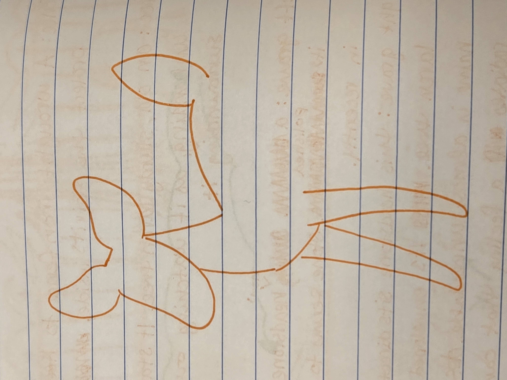
Draw a curved line beneath the tail to start the back leg
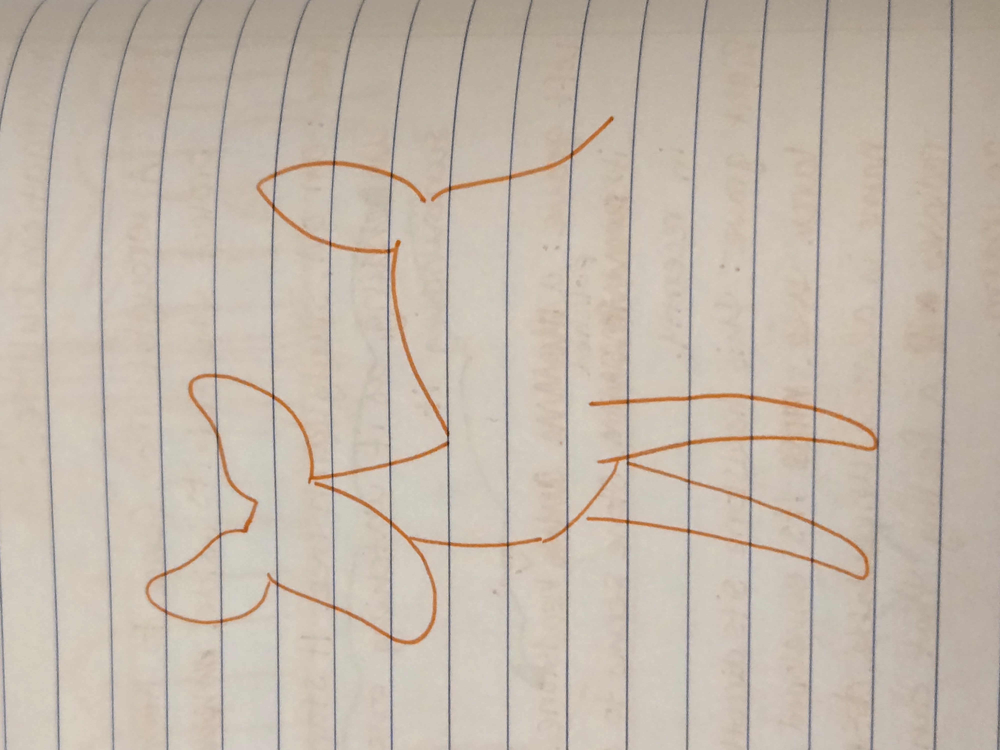
Draw another curved line for the rest of the leg
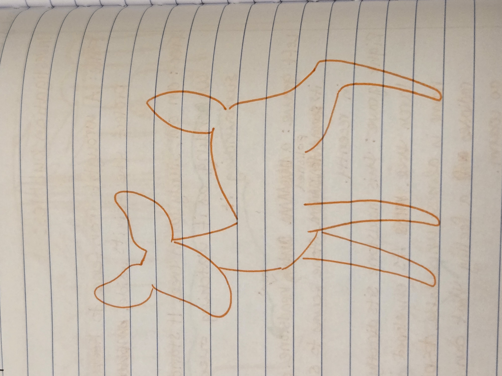
Draw a line for the stomach
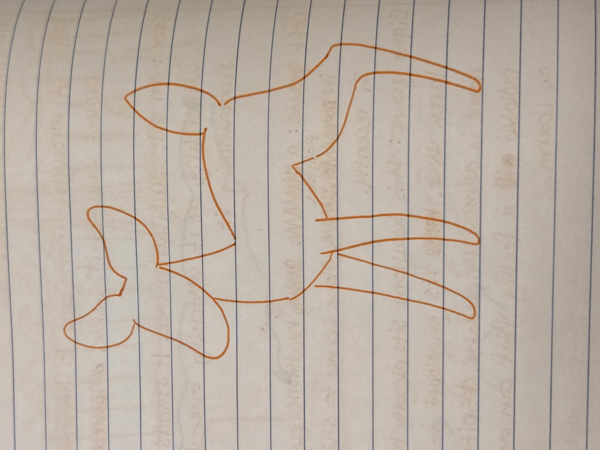
Draw another leg behind the first back leg
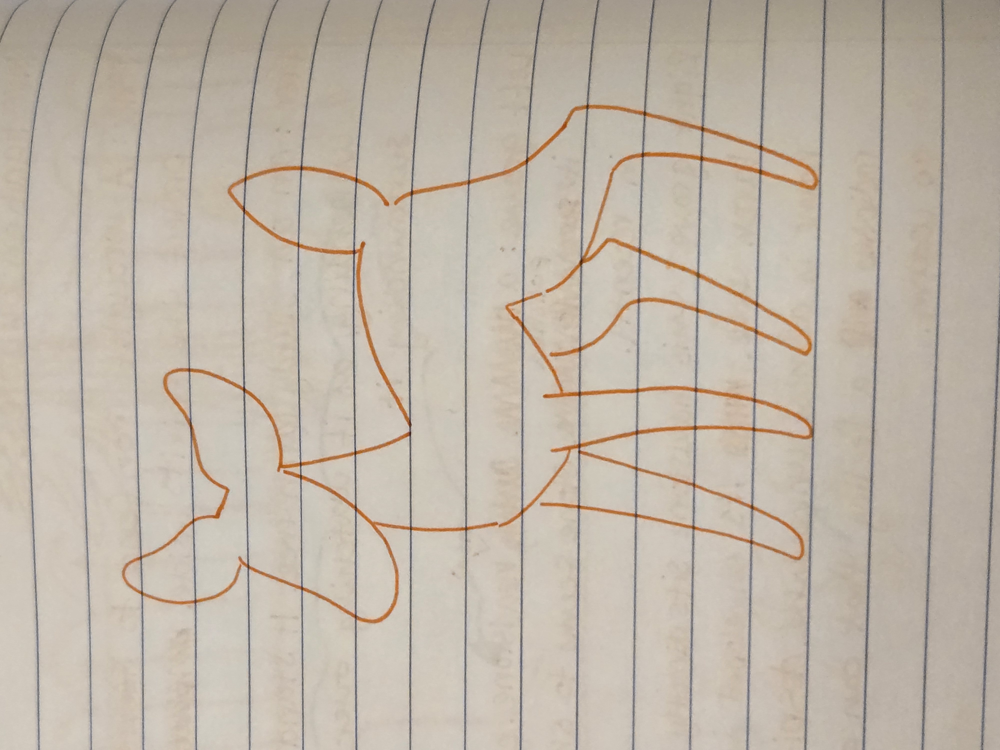
Draw three eyes and a heart-shaped nose
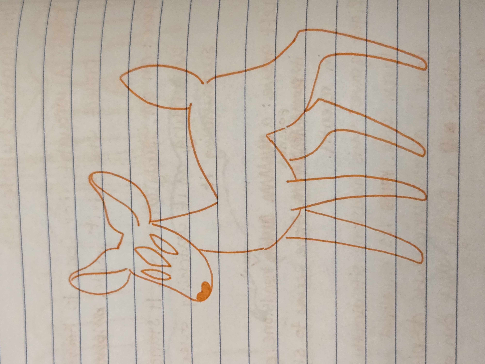
Fill in the details, like the curves of the ears, hooves, and heart-shaped fluff
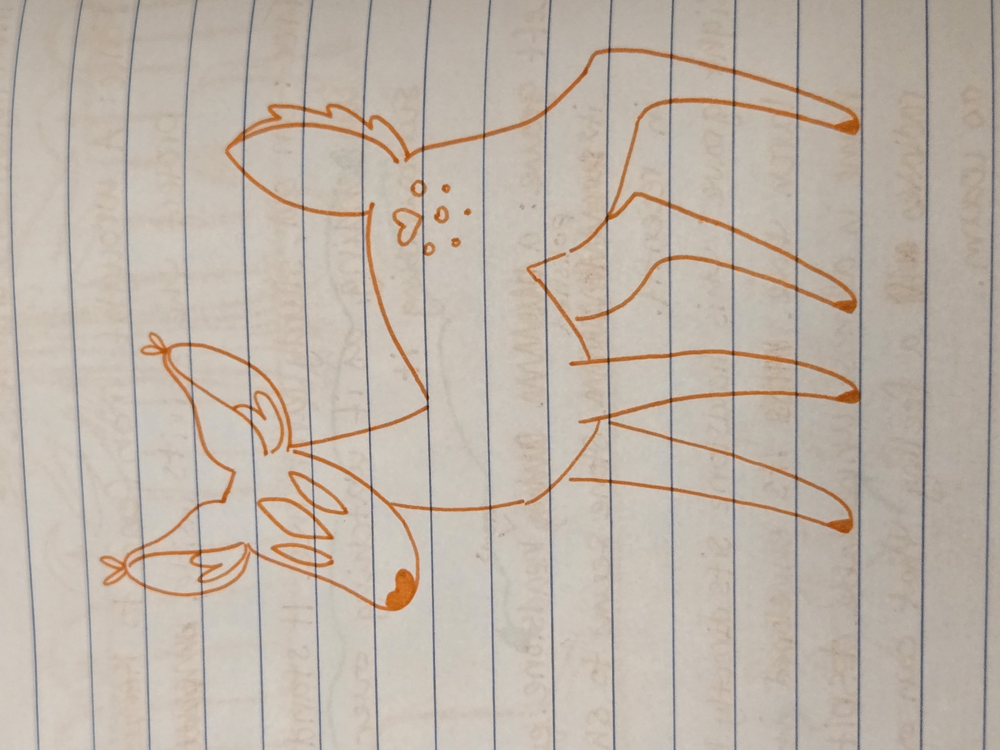
Finally, you can add antlers if you'd like! Draw two spiky curves and connect them to his forehead with some lines
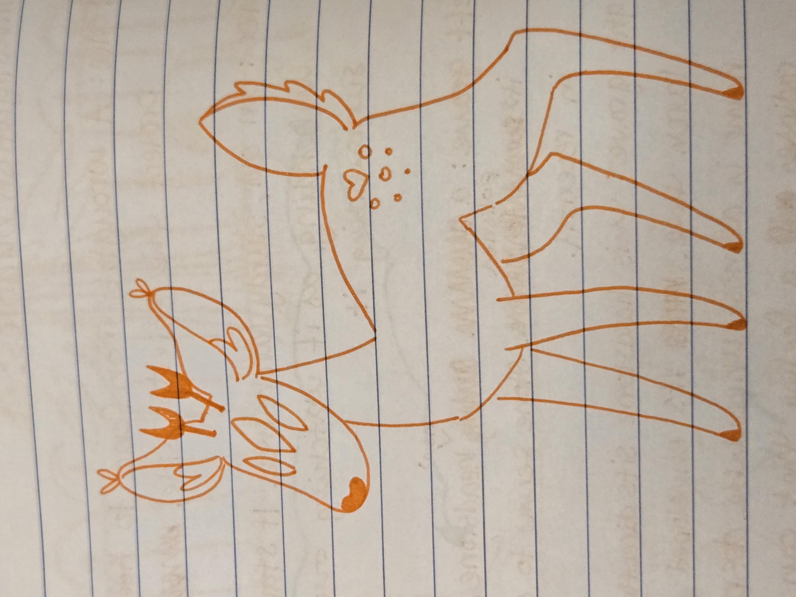